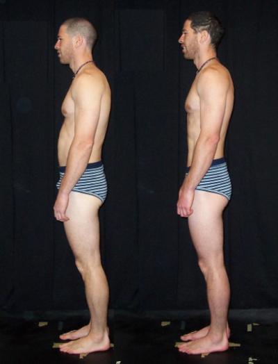
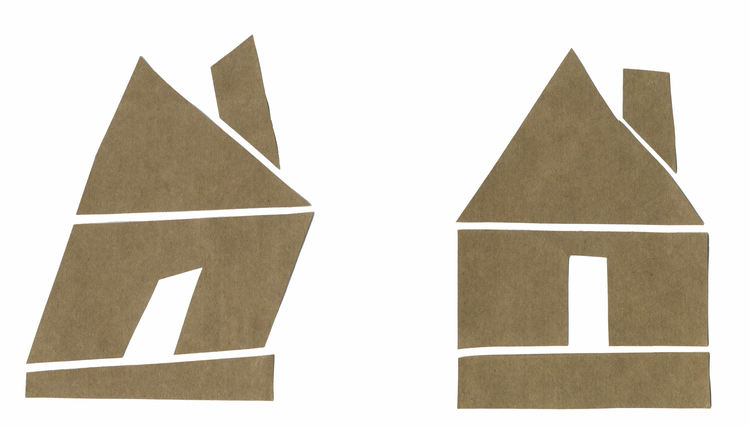
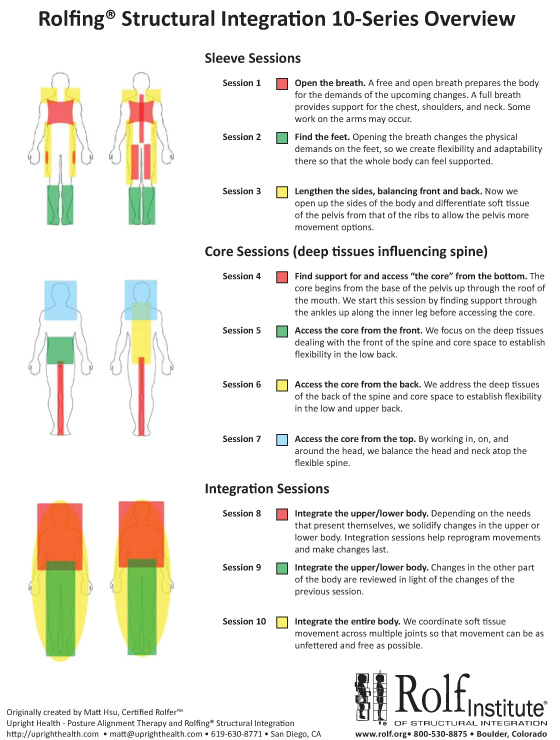

Rolfing generally entails a series of 10 sessions, that realign and retrain your body head to toe. This is done by working with the connective tissue in your body, known as fascia. For anyone experiencing chronic pain, repetitive strain, nagging injuries or a desire to move more easily, Rolfing® can be a long-lasting approach that gets to the root of your discomfort.
Rolfing has a reputation of creating changes that hold, greatly due to the "whole body" process known as the Ten Series. We're not looking for a change that will last 24 hours, we're looking for a long lasting shift. For a shift like that to hold, it may require your whole body to change. Most people I work with choose to do a series of sessions for that reason. This is not the only way I work, but it is the most powerful.
You look at a dilapidated house and see that its roof has caved in after a small storm. Was it the small storm that created the damage, or was this damage just a small part of a greater picture? In this house the doors are askew, the walls are cracked and down below the foundation is sinking. In a Ten Series, we have to start from the beginning, build a foundation and gradually find a way for your body to stand in a way that is not painful
There is a logical wisdom to this sequence of bodywork that follows the body's own patterns of organization. Ida Rolf, founder of Rolfing, spent a lifetime watching her clients change. Her scientific mind understood that the whole body is connected, but work had to be done in a certain order for that change to hold. This is a brilliant framework of organization that is adaptable enough for any body's needs.
